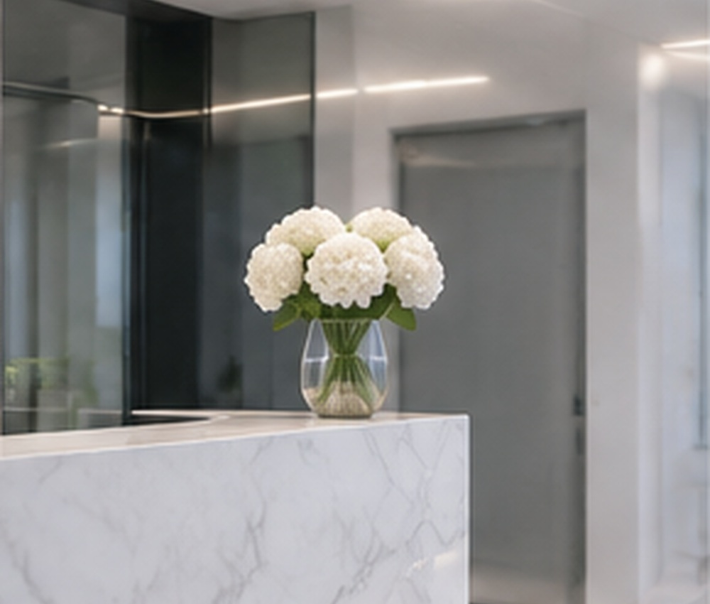

01 / ТЕРАПИЯ
Лечение зубов
Лечение кариеса, пульпита, периодонтита и дёсен, пломбирование и реставрация.
СТОМАТОЛОГИЯ В ЭНГЕЛЬСЕ
Лечение, профилактика и эстетика зубов. Помогаем разобраться с задачей и выбрать подходящее направление лечения.
Красноармейская улица, 138 · Энгельс
НАПРАВЛЕНИЯ ЛЕЧЕНИЯ
В карточке клиники перечислены терапевтические, хирургические, ортопедические и эстетические направления. Выберите интересующую услугу, чтобы узнать, как связаться с клиникой.
Лечение кариеса, пульпита, периодонтита и дёсен, пломбирование и реставрация.
Направление восстановления утраченных зубов с помощью имплантации.
Ортопедия, установка коронок и различные виды протезирования.
Эндодонтическое лечение и работа с корневыми каналами зуба.
Профессиональная гигиена полости рта и отбеливание зубов.
Удаление зубов и услуги хирургической стоматологии.
Эстетическое восстановление и реставрация зубов.
Рентгенография зубов указана в перечне услуг клиники.
Направление коррекции прикуса и положения зубов.
Перечень направлений собран по открытой карточке клиники. Конкретный план лечения и стоимость определяются после консультации.

О КЛИНИКЕ
«Сапфир» — стоматологическая клиника в Энгельсе. В перечне направлений представлены терапия, хирургия, имплантация, ортопедия, ортодонтия, гигиена и эстетическая стоматология.
На сайте собрана основная информация, чтобы пациенту было проще сориентироваться в услугах и связаться с клиникой.
ОТЗЫВЫ ПАЦИЕНТОВ
«Все быстро и качественно, все приветливые и вежливые».
Нина Выскубова
«Все делает качественно, совершенно не больно, быстро».
Анастасия Исаева
«Отличная клиника. Много лет лечу зубы у Кайрата Жаннатовича. Все супер».
Андрей А.
Короткие фрагменты опубликованных отзывов на DentistFind. Полные тексты доступны на странице источника.
ЧАСТЫЕ ВОПРОСЫ
Краткая информация о записи и расположении клиники.
Позвоните по номеру +7 (964) 994-10-19. При записи можно уточнить интересующее направление и доступное время.
Энгельс, Красноармейская улица, 138. Схему проезда можно открыть в Яндекс Картах.
По опубликованному графику: понедельник–пятница с 09:00 до 20:00, суббота с 09:00 до 15:00, воскресенье — выходной.
В открытой карточке указаны лечение зубов и каналов, хирургия, имплантация, протезирование, коронки, ортодонтия, гигиена, отбеливание и эстетическая стоматология.
СТОМАТОЛОГИЯ «САПФИР»
Свяжитесь с клиникой, чтобы уточнить услугу, стоимость и удобное время приёма.
Позвонить в клиникуКрасноармейская улица, 138, Энгельс, Саратовская область